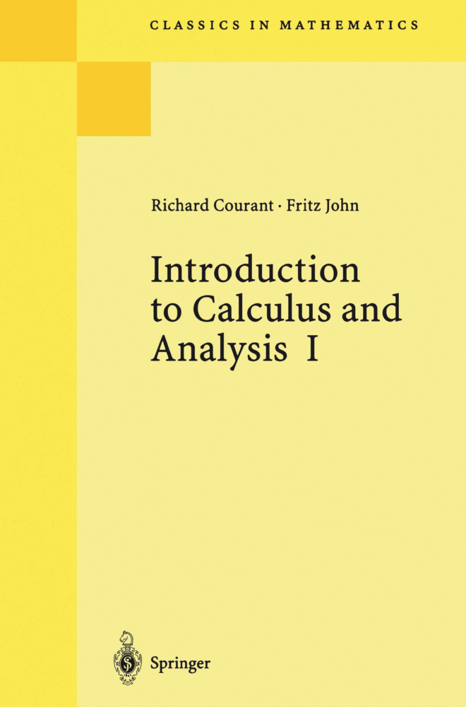

《微积分与数学分析引论》第一卷
Introduction to Calculus and Analysis I
理查德·柯朗（Richard Courant）与弗里茨·约翰（Fritz John）著。原书书名页注明“附插图 204 幅”。
「数学经典」丛书本
理查德·柯朗、弗里茨·约翰著，《微积分与数学分析引论》，第一卷。施普林格出版社，柏林、海德堡。1989 年版重印本。
本书于 1965 年由约翰·威利父子公司旗下的 Interscience Publishers 首次出版。1989 年由施普林格纽约公司重印。1991 年《数学主题分类》号为 26-XX、26-01。已申请出版物在版编目数据。
德国图书馆统一在版编目记录。 柯朗，理查德。《微积分与数学分析引论》／理查德·柯朗、弗里茨·约翰著。1989 年版重印本。柏林、海德堡、纽约、巴塞罗那、香港、伦敦、米兰、巴黎、新加坡、东京：施普林格出版社。「数学经典」丛书，第一卷，1999 年。
纸本 ISBN 978-3-540-65058-4。电子本 ISBN 978-3-642-58604-0。DOI 10.1007/978-3-642-58604-0。丛书 ISSN 1431-0821。
理查德·柯朗的照片取自 C. Reid 所著 Courant in Göttingen and New York: The Story of an Improbable Mathematician（施普林格，纽约，1976）。弗里茨·约翰的照片由纽约柯朗数学科学研究所惠允使用。
1999 年版版权页。 本书受版权保护。无论全书或其中一部分，一切权利均予保留，特别包括翻译、重印、再用插图、朗诵、广播、以缩微胶片或其他方式复制，以及在数据库中存储的权利。只有在符合 1965 年 9 月 9 日《德国著作权法》现行条款的情况下，方可复制本书或其部分内容；使用时必须取得施普林格出版社许可。违反者可依该法追究责任。
© Springer-Verlag Berlin Heidelberg 1999。1999 年最初由施普林格柏林、海德堡、纽约出版社出版。书中使用一般性名称、注册名称、商标等，即使没有特别说明，也不意味着这些名称不受有关法规保护，或可供公众自由使用。印制编号 SPIN 11309222。41/3111 — 5 4 3 2。以无酸纸印刷。
原书书名页及 1989 年版版权页
理查德·柯朗（1888–1972）、弗里茨·约翰。纽约大学柯朗数学科学研究所，美国纽约州纽约市，邮政编码 10012。
《微积分与数学分析引论》第一卷，附插图 204 幅。Springer Science+Business Media, LLC。
1965 年由约翰·威利父子公司旗下的 Interscience Publishers 首次出版。数学主题分类号：26xx、26-01。以无酸纸印刷。
© Springer Science+Business Media New York 1989。1989 年由 Springer-Verlag New York, Inc. 出版。保留一切权利。除为评论或学术分析作简短摘录外，未经出版方 Springer Science+Business Media, LLC 书面许可，不得翻译或复制本书的全部或部分内容。禁止将本书用于任何形式的信息存储与检索、电子改编、计算机软件，或以其他现有或今后发展的类似或不同方式使用。
书中使用一般性名称、商号、商标等，即使未特别标明，也不意味着按《商标与商品标志法》解释的这些名称可由任何人自由使用。
印次序号 9 8 7 6 5 4 3 2 1。纸本 ISBN 978-3-540-65058-4。电子本 ISBN 978-3-642-58604-0。DOI 10.1007/978-3-642-58604-0。